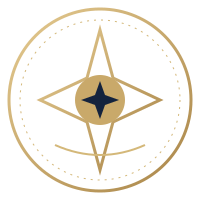

المجلس الرئاسي
يتكون من 33 عضوًا منتخبًا، لكل عضو صوت واحد. مدة العضوية أربع سنوات قابلة للتجديد مرة واحدة.

جمهورية النور الشعبيةمشروع مدني رقمي طوعيهذه هي الاختيارات الدستورية المعتمدة حتى الآن. التفاصيل غير المحسومة تبقى قيد الاستكمال.
يتكون من 33 عضوًا منتخبًا، لكل عضو صوت واحد. مدة العضوية أربع سنوات قابلة للتجديد مرة واحدة.
ينتخبه المجلس من بين أعضائه، ويمثل المشروع رسميًا دون صلاحيات أو أصوات إضافية.
ينتخبه المواطنون مباشرة، ويشكل حكومته بنفسه ويتولى الإدارة التنفيذية.
يتكون من مجلس النواب ومجلس الشيوخ، وينتخب المواطنون أعضاء المجلسين مباشرة. يضم مجلس النواب 210 مقاعد بواقع 3 لكل مقاطعة، ويضم مجلس الشيوخ 70 مقعدًا بواقع مقعد واحد لكل مقاطعة.
يراقب البرلمان الحكومة ويملك سحب الثقة وفق إجراءات دستورية. ويحيل المجلس الرئاسي المخالفات البرلمانية إلى المحكمة.
مستقلة ماليًا وإداريًا وقضائيًا. يرشح قضاتها المجلس والبرلمان وهيئة قضائية مستقلة.
اقتصاد مختلط يجمع الملكية الخاصة والتعاونيات والمشروعات العامة.
عدد مقاعد المجلسين ومدد عضويتهما، إجراءات سحب الثقة، عدد القضاة ومدد خدمتهم، ونصاب الأغلبية المعززة.